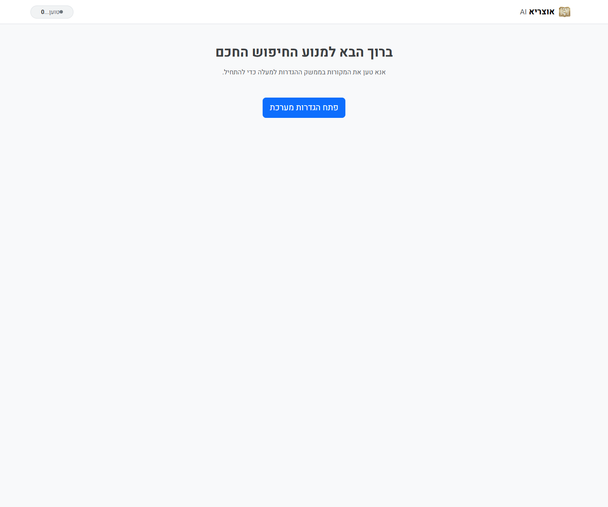

מה מיוחד כאן?
OtzariaAI לא מסתפק בחיפוש מילים. הוא משלב שכבת משמעות, חיפוש טקסטואלי, נרמול עברית ומנגנוני עזר כדי להגיע לתוצאות רלוונטיות יותר גם כשהשאילתה לא מנוסחת בדיוק כמו המקור.
 OtzariaAI
להורדה
OtzariaAI
להורדה
חיפוש תורני חכם. מקומי. בלי רעש.
המערכת משלבת חיפוש וקטורי, אינדקס מקומי, מסננים לפי ספרים וקטגוריות, השלמה אוטומטית, הצעות תיקון איות והצגת הקשר רחב לכל תוצאה. הכל בממשק ידידותי שעובד מקומית ומתאים במיוחד לשימוש יומיומי.

למי זה מתאים
OtzariaAI לא מסתפק בחיפוש מילים. הוא משלב שכבת משמעות, חיפוש טקסטואלי, נרמול עברית ומנגנוני עזר כדי להגיע לתוצאות רלוונטיות יותר גם כשהשאילתה לא מנוסחת בדיוק כמו המקור.
מורידים, מחברים מסד נתונים מתאים, ובפעם הראשונה המערכת בונה אינדקס מקומי. מכאן והלאה אפשר לחפש, לסנן ולעבור להקשרים מלאים במהירות.
האתר מרכז את המידע, התמונות וקישורי ההורדה. קבצי ההפצה עצמם זמינים דרך GitHub Releases של הפרויקט הראשי.
יכולות עיקריות
שילוב בין FAISS לחיפוש טקסטואלי ב־SQLite FTS כדי לאתר תוצאות לפי משמעות וגם לפי התאמה ישירה.
מסד הנתונים, המטמון והאינדקס נשמרים אצלך. אין צורך להעלות תכנים לשירות חיצוני כדי להשתמש במערכת.
מעבר מהיר בין תוצאות, עץ ספרים, מסננים לפי ספרים וטעינת קטעי הקשר רחבים סביב כל תוצאה.
השלמה אוטומטית, תיקון איות, הרחבת מונחים ונרמול עברית עוזרים להגיע לתוצאה מדויקת גם משאילתות חלקיות.
תמונות מסך

הורדה והתחלה
היכנסו ל־GitHub Releases של הפרויקט ובחרו את קובץ ההפצה המתאים לכם.
אפשר לעבוד עם מסדי הנתונים של אוצריא או זית, ולהגדיר את הנתיב דרך הממשק.
לאחר טעינת המודל ובניית האינדקס המקומי, המערכת מוכנה לחיפוש, סינון וניווט בהקשרים.
מתחת למכסה המנוע
FAISS, SQLite FTS, הרחבת מונחים, תיקון איות ונרמול עברית.
תמיכה במסדי נתונים בפורמטים `db`, `sqlite` או `zip`, עם טעינה מקומית.
Flask מקומי, מסך חיפוש ידידותי, עץ ספרייה וטעינת הקשר סביב תוצאה.
טעינת embeddings מ־Hugging Face או מקובצי ZIP מקומיים.
שאלות נפוצות
לא. המערכת עצמה מיועדת לעבודה מקומית. חיבור אינטרנט נדרש רק כדי להוריד מודל או מסד נתונים כשאין קובץ מקומי מוכן.
לא בהכרח. אפשר להשתמש בקובצי ההפצה מתוך Releases. אם רוצים להריץ מהקוד, יש ב־README הוראות התקנה מסודרות.
הפרויקט תומך במסדי הנתונים של אוצריא ושל זית. קישורי ההורדה וההסבר על הגדרת הנתיב מופיעים במאגר הראשי.
כדי לאפשר דף שיווקי נקי ל־GitHub Pages בלי לערבב אותו עם קוד היישום, ההפצות והקבצים המקומיים של הפרויקט הראשי.